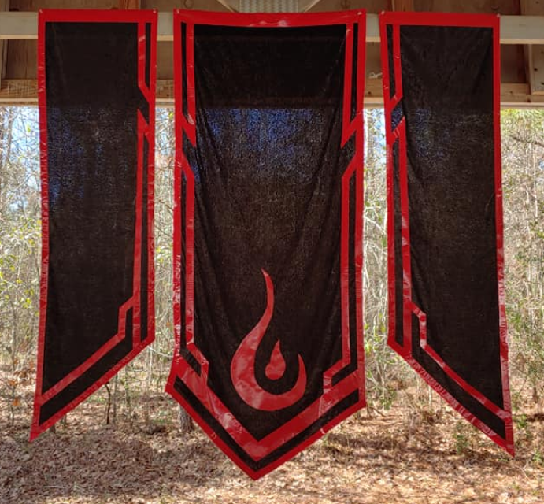

Latest Chronicle Update
We felt it for months. A storm was coming, so we did what survivors do. We prepared for the worst. Then one woman’s sacrifice inspired the citizens to cool the wrath of the blight, and the storm seemed to fade. After Willow’s sacrifice, it seemed the heroes of Aftermath charged in to repair nature’s corruption, and dammit, it worked. For once, the druids had kept their word. Nature is no longer dying, it seems to have a hunger, an unquenchable desire to live, and live at all costs. The last great threat of Aftermath’s peace and sustainability was soon to be resolved.
Aftermath, itself, is still in turmoil. Peace blooming in the outside world only made the citizens’ horrors and hardships clear. The city functions if you squint your eyes and let the sweat of your brow seep in. The water is clean, we can thank life for that. That’s not a major victory though, if it isn’t the water, it’s the bone rippers. They rip apart their victims, leaving the desiccated remains behind. Sometimes they don’t leave the bodies, sometimes they drag them off with the last gurgle of life still caught in the poor bastard’s throat. Why did they take the bodies? Many citizens turned to cannibalism in the famine. Are they eating them?
The bone rippers aren’t the worst. Our own have turned against us. The Town Guard warns the people of murderers targeting both heroes and citizens. Humans, elves, dwarves, all manner of nature’s creatures can be hidden monsters. At the least the bone rippers have the decency to wear their monstrosity in plain view. Then there are whispers of a new foe. Creatures almost indescribable, creatures even the nightmares of the Fae dare not conjure. Screams echo through the streets and linger beyond the wall of sleep.
Some fail to see the progress in our struggle. Some miss the days of the Ogre Kahn Blue, former ruler of Aftermath. Some say we revolted against the solution to our problems. Did we make a mistake? What has become of the former Kahn, who offered us peace, food and security in return for Aftermath’s sovereignty? I do not know.
I only know two things are certain. We have clean water, and there is a storm coming.
